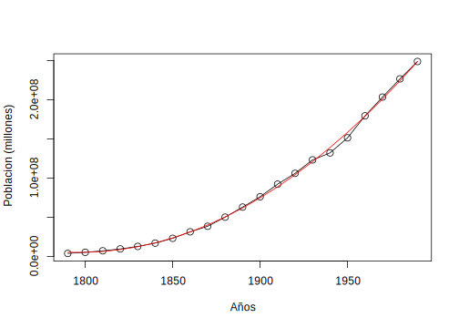
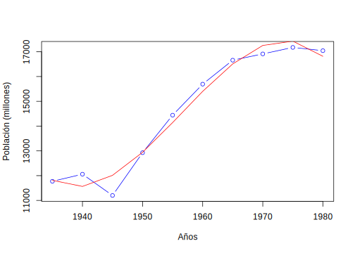

Capítulo 2 Características de series de tiempo
El objetivo primario en el análisis de Series de Tiempo es desarrollar modelos matemáticos que provean una descripción apropiada para los datos muestrales, como los vistos en los ejemplos del capítulo anterior. Así, lo primero que hacemos es utilizar la definición 1.7, para tener un soporte estadístico. En este capítulo daremos algunas definiciones que serán de uso general en todo el resto del libro, también sedescribiran algunos métodos para el análisis exploratorio de las series de tiempo
2.1 Medidas de dependencia para series de tiempo
Una descripción completa de una serie de tiempo, observada como una colección de \(n\) variables aleatorias en puntos de tiempo enteros arbitrarios \(t_1,t_2,\ldots,t_n\), para cada entero positivo \(n\), es proporcionada por la función de distribución conjunta, evaluada como la probabilidad de que los valores de la serie sean conjuntamente menor que \(n\) constantes \(c_1,c_2,\ldots,c_n\), esto es
\[\begin{equation} F(c_1,c_2,\ldots,c_n)=P(x_{t_1}\leq c_1,x_{t_2}\leq c_2,\ldots,x_{t_n}\leq c_n). \tag{2.1} \end{equation}\]Desafortunadamente, la función de distribución multidimensional usualmente no se puede escribir fácilmente a menos que las variables aleatorias tengan distribución normal conjunta, en cuyo caso, la ecuación (2.1) llega a ser la distribución normal multivariada usual.
Un caso particular en la cual la función de distribución multidimensional es fácil de escribir, será en el caso de variables aleatorias normal estándar independientes e idénticamente distribuidas, para lo cual la función de distribución se puede expresar como el producto de las distribuciones marginales, es decir,
\[\begin{equation} F(c_1,c_2,\ldots,c_n)=\prod_{t_1}^{n}\Phi(c_t) \tag{2.2} \end{equation}\]donde
\[\begin{equation} \Phi(x)=\frac{1}{\sqrt{2\pi}}\int_{-\infty}^{x}\mathbb{E}xp\left\{-\frac{z^2}{2}\right\}dz\tag{2.3} \end{equation}\]es la función de distribución normal estándar acumulada.
Aunque la función de distribución multidimensional describa los datos completamente, esto es un instrumento poco manejable para mostrar y analizar datos de series de tiempo. La función de distribución (2.1) debe ser evaluada como una función de \(n\) argumentos, entonces cualquier graficación de las correspondientes funciones de densidad multivariante es prácticamente imposible. La función de distribución unidimensional
\[F_t(x)=P\{x_t\leq x\}\] o la correspondiente función de densidad unidimensional
\[f_t(x)=\frac{\partial F_t(x)}{\partial x},\] cuando existen, a menudo son más útiles para determinar si una coordenada en particular de la serie de tiempo tiene una función de densidad conocida, como la distribución normal (gaussiana), por ejemplo.
Definición 2.2 La función de media es definida como
\[\begin{equation} \mu_{xt}=\mathbb{E}(x_t)=\int_{-\infty}^{\infty}xf_t(x)dx, \tag{2.4} \end{equation}\] en caso de que exista, donde \(\mathbb{E}\) denota el operador usual de esperanza. Cuando no haya confusión sobre a que serie de tiempo nos referimos, escribiremos \(\mu_{xt}\) como \(\mu_t\).Lo importante de comprender sobre \(\mu_t\) consiste en que es una media teórica para la serie de tiempo en un punto particular, donde la media se asume o calcula sobre todos los posibles eventos que podrían haber producido \(x_t\).
Definición 2.3 La función de autocovarianza es definida como producto del segundo momento
\[\begin{equation} \gamma_x(s,t)=\mathbb{E}[(x_s-\mu_s)(x_t-\mu_t)], \tag{2.5} \end{equation}\] para todo \(t\) y \(s\). cuando no haya confusión en la existencia sobre a que serie nos referimos, escribiremos \(\gamma_x(s,t)=\gamma(s,t)\).Note que \(\gamma_x(s,t)=\gamma_x(t,s)\) para todo los puntos \(s\) y \(t\). La función de autocovarianza mide la dependencia lineal entre dos puntos de la misma serie en diferentes tiempos. La autocovarianza (2.5) es el promedio de los productos cruzados relacionado con la densidad conjunta \(F(x_s,x_t)\). Es claro que, para \(s=t\), la autocovarianza se reduce a la varianza (en el caso finito), dado que
\[\begin{equation} \gamma_x(t,t)=\mathbb{E}[(x_t-\mu_t)^2] \tag{2.6} \end{equation}\]Otro función de medida de tendencia importante es la función de autocorrelación.
Definición 2.4 La función de autocorrelación (ACF) (ACF, siglas en ingles: Autocorrelation Function) se define como
\[\begin{equation} \rho(s,t)=\frac{\gamma(s,t)}{\sqrt{\gamma(s,s)\gamma(t,t)}} \tag{2.7} \end{equation}\]La \(ACF\) mide la predictibilidad lineal de una serie de tiempo en tiempo \(t\), digamos \(x_t\) usando solo el valor \(x_s\). Es fácil de demostrar que \(-1\leq\rho(s,t)\leq1\) usando la desigualdad de Cauchy-Schwarz1
Si podemos predecir \(x_t\) exactamente de \(x_s\) a través de la relación lineal \(x_t=\beta_0+\beta_1x_s\) entonces la correlación será 1 cuando \(\beta_1>0\) y \(-1\) cuando \(\beta_1<0\).
Definición 2.5 La función de covarianza cruzada entre dos series \(x_t\) y \(y_t\) se define como
\[\begin{equation} \gamma_{xy}(s,t)=\mathbb{E}[(x_s-\mu_{xs})(y_t-\mu_{yt})] \tag{2.8} \end{equation}\]Definición 2.6 La función de correlación cruzada (CCF) (CCF, siglas en ingles: Cross Correlation Function) es definida como
\[\begin{equation} \rho_{xy}(s,t)=\frac{\gamma_{xy}(s,t)}{\sqrt{\gamma_x(s,s)\gamma_y(t,t)}} \tag{2.9} \end{equation}\]Las definiciones anteriores de funciones de media y varianza son completamente generales. Aunque nosotros no hayamos hecho ninguna suposición especial sobre el comportamiento de las series de tiempo, muchos de los ejemplos precedentes han insinuado que puede existir una especie de regularidad en el comportamiento de las mismas. Introducimos la noción de regularidad que usa el concepto de estacionaridad, que ya hemos introducido empíricamente en el apartado 1.2.1 “Clasificación de las series de tiempo”
Formalmente tenemos las siguientes definiciones de estacionaridad
Definición 2.7 Una serie de tiempo estrictamente estacionaria es una serie para la cual el comportamiento probabilístico de cada sucesión de valores
\[\{x_{t_1},x_{t_2},\ldots,x_{t_k}\}\]
es idéntico a la serie trasladada en el tiempo
\[\{x_{t_1+h},x_{t_2+h},\ldots,x_{t_k+h}\}\]
Esto es,
\[\begin{equation} P[X_{t_1}\leq c_1,\ldots,x_{t_k}\leq c_k] = P[X_{t_1+h}\leq c_1,\ldots,x_{t_k+h}\leq c_k] \tag{2.10} \end{equation}\] para todo \(k=1,2,\ldots\), todo puntos de tiempos \(t_1,t_2,\ldots,t_k\) y números \(c_1,c_2,\ldots,c_k\) y todo salto \(h=\pm0,\pm1,\pm2,\ldots\).Esta definición de estacionaridad es muy fuerte para la mayoría de las aplicaciones prácticas. Por ello necesitamos una versión menos fuerte que imponga menos condiciones sobre las distribuciones de probabilidad, ya que si observamos bien la ecuación (2.10), lo que nos dice la misma es que todas las posibles distribuciones de probabilidad deben ser iguales, lo que como ya indicamos en la práctica es muy difícil de compriobar aún para conjuntos de datos sencillos. La siguiente versión de estacionaridad solo impone condiciones sobre los dos primeros momentos de la serie
Definición 2.8 Una serie de tiempo débilmente estacionaria \(x_t\), es un proceso de varianza finita tal que
la función de media \(\mu_t\) es constante y no depende del tiempo \(t\),
la función de covarianza \(\gamma(t,s)\) depende solo de las diferencias de \(s\) y \(t\), \(|t-s|\).
Nota. 1) Si una serie de tiempo es estrictamente estacionaria, entonces todos las funciones de distribución multivariadas para subconjuntos de variables deben coincidir con sus contrapartes en el conjunto trasladado, para todos los valores del parámetro \(h\). Por ejemplo para \(k=1\) La ecuación (2.10) implica que
\[\begin{equation} P\{x_s\leq c\}=P\{x_t\leq c\} \tag{2.11} \end{equation}\]para cada puntos \(s\) y \(t\).
Esta declaración implica, por ejemplo, que si la probabilidad de un valor de una serie de tiempo muestreada cada hora es negativa a la 1:00a.m, la probabilidad a la 10:00a.m. es la misma. Además, si la función de media, \(\mu_t\) de la serie \(x_t\) existe, (2.11) implica que \(\mu_s=\mu_t\) para todo \(s\) y \(t\), y por consiguiente \(\mu_t\) debe ser constante.
- Cuando \(k=2\), podemos escribir la ecuación (2.10) como
para cada par de puntos \(s\) y \(t\) y salto \(h\). Entonces, si la función de varianza del proceso existe, (2.12) implica que la función de autocovarianza de la serie \(x_t\) satisface \(\gamma(s,t)=\gamma(s+h,t+h)\) para todos \(s\) y \(t\) y salto \(h\).
Podemos interpretar este resultado diciendo que la función de autocovarianza del proceso depende sólo de las diferencias de tiempo entre \(s\) y \(t\), y no del tiempo actual.Es claro de la definición 2.7 de serie estrictamente estacionaria, que una serie de tiempo estrictamente estacionaria con varianza finita, también es una serie estacionaria. El recíproco no es cierto a menos que impongamos condicionaes adicionales. Un importante caso donde estacionaridad implica estricta estacionaridad es el caso de series de tiempo gaussianas.
Ya que la función de media \(\mathbb{E}(x_t)=\mu_t\) de una serie de tiempo estacionaria es independiente del tiempo \(t\), escribimos
\[\begin{equation} \mu_t=\mu \tag{2.13} \end{equation}\]Debido a que la función de covarianza de una serie de tiempo estacionaria, \(\gamma(s,t)\) en tiempos \(s\) y \(t\) depende sólo de la diferencia \(|s-t|\), podemos simplificar la notación. Sea \(s=t+h\), donde \(h\) representa el tiempo de traslación o salto, entonces
\[\begin{eqnarray} \gamma(s,t)&=&\mathbb{E}[(x_{t+h}-\mu)(x_t-\mu)]\\ \nonumber &=&\mathbb{E}[(x_h-\mu)(x_0-\mu)]\\ &=&\gamma(h,0) \nonumber \tag{2.14} \end{eqnarray}\]no depende del argumento de tiempo \(t\); asumiendo que \(\text{Var}(x_t)=\gamma(0,0)<\infty\). De ahora en adelante, por conveniencia, prescindiremos del segundo argumento de \(\gamma(h,0)\), es decir, la función de covarianza se denotará \(\gamma(h)\).
Definición 2.9 La función de autocovarianza de una serie de tiempo estacionaria se escribirá como
\[\begin{equation} \gamma(h)=\mathbb{E}[(x_{t+h}-\mu)(x_t-\mu)] \tag{2.15} \end{equation}\]Definición 2.10 La función de autocorrelación (ACF) de una serie de tiempo estacionaria será escrita, usando (2.7) como
\[\begin{equation} \rho(h)=\frac{\gamma(t+h,t)}{\sqrt{\gamma(t+h,t+h)\gamma(t,t)}}=\frac{\gamma(h)}{\gamma(0)} \tag{2.16} \end{equation}\]La desigualdad de Cauchy-Schwartz muestra nuevamente que \(-1\leq\rho(h)\leq1\) para todo \(h\).
** Propiedades de la función de covarianza**
- Para el valor en \(h=0\), la función de autocovarianza
\[\begin{equation}
\gamma(0)=\mathbb{E}[(x_t-\mu)^2]
\tag{2.17}
\end{equation}\]
es la varianza de la serie de tiempo; note que la desigualdad de Cauchy-Schwartz implica que \(|\gamma(h)|\leq\gamma(0)\).
- La autocovarianza de una serie estacionaria es simétrica respecto al origen, esto es
\[\begin{equation}
\gamma(h)=\gamma(-h)
\tag{2.18}
\end{equation}\]
para todo \(h\). Esta propiedad se debe a que trasladar la serie por \(h\) significa que
\[\begin{eqnarray*}
\gamma(h)&=&\gamma(t+h-t)\\
&=&\mathbb{E}[(x_{t+h}-\mu)(x_t-\mu)]\\
&=&\mathbb{E}[(x_t-\mu)(x_{t+h}-\mu)]\\
&=&\gamma(t-(t+h))\\
&=&\gamma(-h)
\end{eqnarray*}\]
lo cual muestra como usar la notación para demostrar el resultado.
Definición 2.11 Dos series de tiempo \(x_t\) y \(x_s\) se dice que son conjuntamente estacionarias si cada una de ellas es estacionaria y la función de correlación cruzada
\[\begin{equation} \gamma_{xy}(h)=\mathbb{E}[(x_{t+h}-\mu_x)(y_t-\mu_y)] \tag{2.19} \end{equation}\] es una función sólo del salto \(h\).Definición 2.12 La función de correlación cruzada (CCF) de dos series conjuntamente estacionarias \(x_t\) y \(y_t\) se define como
\[\begin{equation} \rho_{xy}(h)=\frac{\gamma_{xy}(h)}{\sqrt{\gamma_x(0)\gamma_y(0)}} \tag{2.20} \end{equation}\]De nuevo, tenemos el resultado \(-1\leq\rho_{xy}(h)\leq1\) lo cual nos permite comparar los valores extremos -1 y 1 cuando vemos la relación entre \(x_{t+h}\) y \(y_t\). La función de correlación cruzada satisface
\[\begin{equation} \rho_{xy}(h)=\rho_{yx}(-h) \tag{2.21} \end{equation}\]lo cual se puede demostrar de manera similar que para (2.18).
Ejemplo 2.1 (Estacionaridad conjunta) Considere las series \(x_t\) y \(y_t\) formadas por las sumas y diferencias de dos valores sucesivos de un ruido blanco respectivamente, esto es
\[x_t=w_t+w_{t-1}\]
y
\[y_t=w_t-w_{t-1}\]
donde \(w_t\) son variables aleatorias independientes con media cero y varianza \(\sigma_w^2\). Es fácil demostrar que \(\gamma_x(0)=\gamma_y(0)=2\sigma_w^2\) y \(\gamma_x(1)=\gamma_x(-1)=\sigma_w^2\), \(\gamma_y(1)=\gamma_y(-1)=-\sigma_w^2\). También
\[\begin{eqnarray*} \gamma_{xy}(1)&=&\mathbb{E}[(x_{t+1}-0)(y_t-0)]\\ &=&\mathbb{E}[(w_{t+1}+w_t)(w_t-w_{t-1})]\\ &=&\sigma_w^2 \end{eqnarray*}\]porque solo uno de los productos es distinto de cero.\ Similarmente, \(\gamma_{xy}(0)=0,\gamma_{xy}(-1)=-\sigma_w^2\). Usando (), obtenemos
\[\rho_{xy}(h)=\begin{cases}0,&h=0\\ 1/2,&h=1\\ -1/2,&h=-1\\ 0,&|h|\geq2\end{cases}.\]
Claramente, las funciones de autocovarianza y correlación cruzada dependen solo del salto \(h\), por lo tanto las series son conjuntamente estacionarias.El concepto de estacionaridad débil forma la base para muchos de los análisis realizados con series de tiempo. Las propiedades fundamentales de la media (2.13) y la función de covarianza (2.15) son satisfechas por muchos modelos teóricos que aparecen para generar realizaciones muestrales apropiadas. En los ejemplos ?? y ??, las dos series fueron generadas de forma que fuesen realizaciones estacionarias, y en el ejemplo ?? demostramos que la serie en el ejemplo ?? fue de hecho, débilmente estacionaria. Ambos ejemplos son casos especiales de los llamados procesos lineales.
Definición 2.13 Un proceso lineal \(x_t\) se define como una combinación lineal de variables aleatorias de ruido blanco \(w_t\), y está dado por
\[\begin{equation} x_t=\mu+\sum_{j=-\infty}^{\infty}\psi_jw_{t-j} \tag{2.22} \end{equation}\]donde los coeficientes satisfacen
\[\begin{equation} \sum_{j=-\infty}^{\infty}|\psi_j|<\infty \tag{2.23} \end{equation}\]Para un proceso lineal, podemos demostrar que la función de autocovarianza está dada por
\[\begin{equation} \gamma(h)=\sigma_w^2\sum_{j=-\infty}^{\infty}\psi_{j+h}\psi_j \tag{2.24} \end{equation}\]para todo \(h\geq0\); recuerde que \(\gamma(-h)=\gamma(h)\). Finalmente como mencionamos anteriormente, un caso importante en el cual una serie débilmente estacionaria es también estrictamente estacionaria es la serie normal o gaussiana.
Definiendo \(k\times1\) vector de medias \(\hat{\mu}=(\mu_{t_1},\mu_{t_2},\ldots,\mu_{t_k})'\) y la \(k\times k\) matriz de covarianza positiva como \(\Gamma=\{\gamma(t_i,t_j);i,j=1,\ldots,k\}\), la función de densidad normal multivariada se puede escribir como
\[\begin{equation} f(\hat{x})=(2\pi)^{-k/2}|\Gamma|^{-1/2}\exp\left\{-\frac{1}{2}(\hat{x}-\hat{\mu})'\Gamma^{-1}(\hat{x}-\hat{\mu})\right\} \tag{2.25} \end{equation}\]donde \(|\cdot|\) denota el determinante. Esta distribución forma la base para resolver problemas que envuelven inferencia estadística para series de tiempo. Si una serie de tiempo gaussiana \(\{x_t\}\) es débilmente estacionaria, entonces \(\mu_t=\mu\) y \(\gamma(t_i,t_j)=\gamma(|t_i-t_j|)\), de modo que el vector \(\hat{\mu}\) y la matriz \(\Gamma\) son independientes del tiempo. Este hecho implica que todas las distribuciones finitas, (2.25) de la serie \(\{x_t\}\) dependen sólo del salto de tiempo y no del tiempo actual, y por consiguiente la serie debe ser estrictamente estacionaria.
2.2 Estimación de la Tendencia
En esta sección introducimos la estimación de la tendencia. En esencia, existen dos métodos para estimar la tendencia y la componente estacional de una serie de tiempo:
- Método paramétrico: Se basa en
- Proponer modelos paramétricos para expresar la relación que guardan la tendencia y la componente estacional con el tiempo.
- Ajustar dichos modelos a la serie de tiempo (por ejemplo, a través del método de mínimos cuadrados).
- Aislar la tendencia y la componente estacional por medio de los modelos ajustados.
- Método no paramétrico: Se basa en
- Asumir “suavidad” en la relación que guardan la tendencia y la componente estacional con el tiempo.
- Aislar la tendencia y la componente estacional a través de la suavización del gráfico de la serie (aplicando, por ejemplo, filtros de promedios móviles).
Hay otros métodos que no consideraremos en este libro, por ejemplo, wavelets. En ocasiones la expresión “suavizar una serie” es equivalente a “extracción de la tendencia de una serie”, y ambas equivalen a la estimación de la tendencia.
A continuación presentamos una lista de posibles modelos para la tendencia \(T_t\):
- Lineal \[\begin{equation} T_t=\beta_0+\beta_1t \tag{2.26} \end{equation}\]
- Cuadrático \[\begin{equation} T_t=\beta_0+\beta_1t+\beta_2t^2 \tag{2.27} \end{equation}\]
- Cúbico \[\begin{equation} T_t=\beta_0+\beta_1t+\beta_2t^2+\beta_3t^3 \tag{2.28} \end{equation}\]
- Exponencial \[\begin{equation} T_t=\exp(\beta_0+\beta_1t) \tag{2.29} \end{equation}\]
- Logístico \[\begin{equation} T_t=\frac{\beta_2}{1+\beta_1\exp(-\beta_0t)} \tag{2.30} \end{equation}\]
En la tendencia cuadrática podemos observar:
- Si \(\beta_1,\beta_2>0\), \(T_t\) es monótona creciente.
- Si \(\beta_1,\beta_2<0\), \(T_t\) es monótona decreciente.
- Si \(\beta_1>0\) y \(\beta_2<0\), \(T_t\) es cóncava.
- Si \(\beta_1<0\) y \(\beta_2>0\), \(T_t\) es convexa.
Otro modelo propuesto para la tendencia es el dado por la siguiente definición.
El modelo anterior corresponde a un modelo con tendencia lineal para el logaritmo de \(X_t\). En (2.31) al tomar exponencial se tiene \(X_t = \exp(\beta_0+\beta_1t + \epsilon_t)\), que es similar al modelo con tendencia exponencial (2.29). Sin embargo, son modelos diferentes y se estiman por métodos diferentes.
Para la estimación de los parámetros \(\beta_0,\beta_1,\beta_2\) en los modelos lineales (2.26), (2.27), (2.28) y (2.31) utilizaremos el método de mínimos cuadrados clásico (MCC). En este método los parámetros estimados son aquellos que producen el valor mínimo de la suma de errores cuadrados. Para los modelos (2.29) y (2.30) se usa el método de mínimos cuadrados no lineales, que también minimiza la suma de errores cuadrados.
El modelo Log-Lineal (2.31) es equivalente, algebráicamente, a
\[X_t = \exp(\beta_0 + \beta_1t + \epsilon_t).\] Sin embargo, este último modelo es no lineal y no coincide con el modelo exponencial,(2.29), \(X_t = \exp(\beta_0+\beta_1t)+\epsilon_t\). Es posible estimar por mínimos cuadrados ordinarios el modelo Log-Lineal y utilizar los parámetros estimados \(\hat{\beta}_0,\hat{\beta}_1\) como valores iniciales en la estimación del modelo exponencial por mínimos cuadrados no lineales. Pero los parámetros estimados en ambos modelos no necesariamente coinciden.
Aunque la serie tenga una componente estacional \(E_t\), \(X_t = T_t + E_t + \epsilon_t\), solamente consideramos un modelo de regresión entre \(X_t\) y \(T_t\), tal que \(X_t = T_t + \eta_t\), donde \(\eta_t\) es el término de error, de forma que \(\eta_t=E_t+\epsilon_t\). Por ejemplo,
En el caso lineal \(T_t = \beta_0 + \beta_1t\), ajustamos el modelo de regresión lineal: \(X_t = \beta_0 + \beta_1t + \eta_t\).
En el caso cuadrático \(T_t = \beta_0 +\beta_1t+\beta_2t^2\), ajustamos el modelo de regresión cuadrático \(X_t = \beta_0+\beta_1t+\beta_2t^2 +\eta_t\). Nótese que en este caso hay que definir una variable explicativa adicional \(t^2\).
En general, para que datos de series de tiempo sean estacionarias, es necesario hacer un promedio de productos en el tiempo. Como para datos de serie de tiempo es importante medir la dependencia entre los valores de la serie; al menos, debemos ser capaces de estimar las autocorrelaciones con precisión. Será difícil medir la dependencia de estos valores si la estructura de dependencia no es regular o si cambia en el tiempo. De ahí, que para realizar cualquier análisis estadístico significativo de datos de series de tiempo, será crucial que las funciones de media y autocovarianza satisfagan las condiciones de estacionaridad dadas en la Definición ??. A menudo, este no es el caso, y en esta sección daremos algunos métodos para lidiar con los efectos de no-estacionaridad sobre las propiedades estacionarias de las series a estudiar.
Quizás la forma más fácil de trabajar con series no-estacionarias es el modelo de tendencia estacionaria donde el proceso tiene comportamiento estacionario alrededor de una tendencia. Podemos escribir este tipo de modelos como
\[\begin{equation} X_t=T_t+Y_t \tag{2.32} \end{equation}\]donde \(X_t\) son las observaciones, \(T_t\) denota la tendencia y \(Y_t\) es un proceso estacionario.
Por lo general, una tendencia fuerte \(T_t\) puede oscurecer el comportamiento del proceso estacionario \(Y_t\), como veremos en ejemplos posteriores.
De aquí, será una ventaja el que podamos remover la tendencia como un primer paso para un análisis exploratorio de los datos. Los pasos envuelven obtener un estimador razonable del componente de tendencia, llamémoslo \(\hat{T}_t\) y entonces trabajar con el residual
\[\begin{equation} \hat{Y}_t=X_t-\hat{T}_t. \tag{2.33} \end{equation}\]El primer paso en el análisis de cualquier tipo de serie es un gráfico de los datos.
Si existe alguna aparente discontinuidad en la serie, tal como un cambio súbito en el nivel de la serie, esto puede darnos una idea para el análisis de la serie, un primer paso sería dividir la serie en segmentos homogéneos.
Si existen observaciones o datos “outliers”, estos deben ser estudiados con cuidado para verificar si existe alguna justificación para descartar estas observaciones, como por ejemplo si una observación ha sido registrada de algún otro proceso por error.
La inspección del gráfico también podría sugerir la representación de los datos como una realización de un proceso, como el modelo clásico de descomposición dado por (1.8).
Si la componente estacional y la componente aleatoria o ruido parecen incrementarse con el nivel del proceso entonces una transformación preliminar de los datos es a menudo usada para hacer que los datos transformados sean compatibles con el modelo (1.8). En esta sección discutiremos algunas técnicas para identificar y eliminar las componentes en (1.8).
Nuestro objetivo es estimar y extraer las componentes determinísticas \(T_t\) y \(E_t\) con la esperanza de que el residual o la componente aleatoria \(\epsilon_t\) llegue a ser un proceso estacionario. Entonces podremos usar la teoría de tales procesos para hallar un modelo probabilístico satisfactorio para el proceso \(\epsilon_t\), analizar sus propiedades y usarlo en conjunto con \(T_t\) y \(E_t\) para hacer pronósticos y control de \(X_t\).
Los dos enfoques para la eliminación de las componentes de tendencia y estacional son:
- Estimación de \(T_t\) y \(E_t\) en el modelo (1.8),
- Diferencia de los datos \(X_t\).
Ilustraremos ambos enfoque con varios ejemplos
2.2.1 Estimación de la tendencia en ausencia de estacionalidad
Si tenemos una serie de tiempo para la cual está ausente la componente estacional \(E_t\) el modelo (1.8) llega ser \[\begin{equation} X_t = T_t + \epsilon_t,\quad t=1,\ldots,n \tag{2.34} \end{equation}\]donde, sin perdida de generalidad, podemos suponer que \(\mathbb{E}(\epsilon_t)=0\). A continuación vamos a describir tres métodos para estimar la tendencia \(T_t\).
- Método T1: Estimación de \(T_t\) por mínimos cuadrados. El objetivo de este método es intentar ajustar una familia paramétrica de funciones como las vistas en las ecuaciones (2.26) a (??), a los datos eligiendo los parámetros que minimicen \(\sum_t(X_t-T_t)^2\). Esto es, asumiendo que \(\mathbb{E}(\epsilon_t)=0\), se tiene \[\mathbb{E}(X_t)=T_t=f(t)\] Una suposición común es que la función \(f\) depende de ciertos parámetros (desconocidos) \(\beta_1,\ldots,\beta_p\), es decir,
Sin embargo, el tipo de función es conocida. Los parámetros \(\beta_1,\ldots,\beta_p\) serán estimados a partir de una realización \(x_t\) de la variable aleatoria \(X_t\). La aproximación por estimación de mínimos cuadrados \(\hat{\beta}_1,\ldots,\hat{\beta}_p\) debe satisfacer
\[\begin{equation} \sum_t(x_t-f(t;\hat{\beta}_1,\ldots,\hat{\beta}_p))^2 = \min_{\beta_1,\ldots,\beta_p}\sum_t(x_t-f(t;\beta_1,\ldots,\beta_p))^2 \tag{2.36} \end{equation}\]cuya solución, si existe, es un problema numérico. El valor \(\hat{x}_t=f(t;\hat{\beta}_1,\ldots,\hat{\beta}_p)\) servirá como una predicción de futuros valores \(x_t\). Las diferencias observadas \(x_t-\hat{x}_t\) son llamadas residuales. Ellas contienen información sobre la bondad de ajuste del modelo a los datos.
uspop=ts(scan("data/USPOP.txt"),frequency=1/10,start=1790)
pop=window(uspop,start=1790)
plot(pop,type="o",ylab="Poblacion (millones)")
Podemos notar del gráfico que la tendencia es creciente y parece tener un comportamiento cuadrático, por lo que ajustando una función de la forma (2.27) para la población de los datos USPOP para \(1790\leq t\leq1980\) nos da los parámetros estimados
\[\hat{a}_0=2.101\times10^{10};\quad \hat{a}_1=-2.338\times10^{7}; \hat{a}_2=6.506\times10^{3}\]
En el gráfico siguiente se puede observar la curva ajustada y los datos originales. Los valores estimados del proceso de ruido \(\epsilon_t, 1790\leq t\leq1980\), son los residuales obtenidos por sustracción de \(\hat{T}_t=\hat{a}_0+\hat{a}_1t+\hat{a}_2t^2\) de la serie \(X_t\). La componente de tendencia \(T_t\) nos proporciona un predictor natural de los valores futuros de \(X_t\). Por ejemplo si deseamos estimar \(T_{1990}\) por su valor medio, obtenemos
\[T_{1990} = 2.4853\times10^8\]
para la población de EE.UU en 1990. Sin embargo si los residuales \(\hat{\epsilon}_t\) están altamente correlacionados podemos ser capaces de usar esos valores para dar una mejor estimación de \(T_{1990}\) y por consiguiente de \(X_{1990}\).
x=time(pop)
reg=lm(pop~x+I(x^2),na.action=NULL)
summary(reg)##
## Call:
## lm(formula = pop ~ x + I(x^2), na.action = NULL)
##
## Residuals:
## Min 1Q Median 3Q Max
## -6947521 -358167 436285 1481410 3391761
##
## Coefficients:
## Estimate Std. Error t value Pr(>|t|)
## (Intercept) 2.10e+10 6.59e+08 31.9 <2e-16 ***
## x -2.34e+07 6.98e+05 -33.5 <2e-16 ***
## I(x^2) 6.51e+03 1.85e+02 35.2 <2e-16 ***
## ---
## Signif. codes:
## 0 '***' 0.001 '**' 0.01 '*' 0.05 '.' 0.1 ' ' 1
##
## Residual standard error: 2770000 on 18 degrees of freedom
## Multiple R-squared: 0.999, Adjusted R-squared: 0.999
## F-statistic: 8.05e+03 on 2 and 18 DF, p-value: <2e-16plot(pop,type="o",xlab="Años",ylab="Poblacion (millones)")
lines(reg$fitted.values,col="red")
\[T_t=\beta_0+\beta_1t+\beta_2t^2+\beta_3t^3\]
El código en R para el gráfico y el ajuste es
NRWpop=read.table("data/Population-North-Rhine-Westphalia.txt",
header = TRUE)
knitr::kable(head(NRWpop,booktabs=TRUE,
caption="Población (en millones) de North-Rhine-Westphalia, Alemania, 1935-1980"))| Year | Population |
|---|---|
| 1935 | 11772 |
| 1940 | 12059 |
| 1945 | 11200 |
| 1950 | 12926 |
| 1955 | 14442 |
| 1960 | 15694 |
plot(NRWpop, type = "b",col="blue",xlab = "Años",ylab = "Población (millones)")
# Modelo cúbico
t=NRWpop[,1]
pob=NRWpop[,2]
modelo=lm(pob~t+I(t^2)+I(t^3),na.action = NULL)
summary(modelo)##
## Call:
## lm(formula = pob ~ t + I(t^2) + I(t^3), na.action = NULL)
##
## Residuals:
## Min 1Q Median 3Q Max
## -813.0 -199.2 67.1 275.6 493.8
##
## Coefficients:
## Estimate Std. Error t value Pr(>|t|)
## (Intercept) 2.11e+09 5.10e+08 4.13 0.0061 **
## t -3.23e+06 7.81e+05 -4.14 0.0061 **
## I(t^2) 1.65e+03 3.99e+02 4.14 0.0061 **
## I(t^3) -2.81e-01 6.79e-02 -4.14 0.0061 **
## ---
## Signif. codes:
## 0 '***' 0.001 '**' 0.01 '*' 0.05 '.' 0.1 ' ' 1
##
## Residual standard error: 472 on 6 degrees of freedom
## Multiple R-squared: 0.974, Adjusted R-squared: 0.962
## F-statistic: 76.2 on 3 and 6 DF, p-value: 3.63e-05lines(t,modelo$fitted.values,col="red")
La curva punteada en azul corresponde a los datos originales, la curva en rojo corresponde al ajuste mediante el modelo cúbico.
- Método T2: Suavizado por medio de un promedio móvil. Sea \(q\) un entero no negativo y consideremos un promedio móvil de la forma
de un proceso \(\{X_t\}\) definido por (2.34). Entonces para \(q+1\leq t\leq n-q\),
\[\begin{eqnarray} W_t &=& \frac{1}{2q+1}\sum_{j=-q}^qT_{t+j}+\frac{1}{2q+1}\sum_{j=-q}^q\epsilon_{t+j}\\ \nonumber &\simeq& T_t \tag{2.38} \end{eqnarray}\]suponiendo que \(T_t\) es aproximadamente lineal sobre el intervalo \([t-q,t+q]\) y que el promedio del término de error sobre este intervalo es cercano a cero.
El promedio móvil entonces nos provee con el estimador
\[\begin{equation} \hat{T}_t = \frac{1}{2q+1}\sum_{j=-q}^qX_{t+j},\quad q+1\leq t\leq n-q. \tag{2.39} \end{equation}\]Dado que \(X_t\) es no observado para \(t\leq0\) o \(t\geq n\) no podemos usar (2.39) para \(t\leq q\) o \(t>n-q\). Una forma de resolver este problema es haciendo \(X_t=X_1\) para \(t<1\) y \(X_t=X_n\) para \(t>n\). A continuación presentamos un ejemplo
A estos datos le aplicamos un promedio móvil de 5 puntos, la Figura muestra la serie suavizada y el término de error estimado \(\hat{\epsilon}_t = X_t - \hat{T}_t\) se muestra en la Figura . Como era de esperarse ellos no presentan una tendencia clara.
Las instrucciones en R para el suavizado y los gráficos son los siguientes:
H=read.table("data/Huelgas.txt")
# Proemdio móvil por medio de la función "filter"
W=filter(H[,2],sides=2,rep(1/5,5))
# Residuales de X_t
y=H[,2]-W
# Graficos
par(mfrow=c(3,1))
plot(H,xlab="años",ylab="Huelgas",type='b',
main = "Huelgas en EE.UU., años 1951-1980")
plot(H[,1],W,xlab="años",ylab="Huelgas",type='b',
main = "Promedio móvil de 5 puntos para los datos de Huelga")
plot(H[,1],y,xlab="años",ylab="Residuales",type='b',
main = "Residuales e_t=X_t-T_t")
Para cada valor fijo \(a\in[0,1]\), el promedio móvil de un lado \(\hat{T}_t, t=1,\ldots,n\), definido por la recursión
\[\begin{equation} \hat{T}_t = aX_t+(1-a)\hat{T}_t,\quad t=2,\ldots,n \tag{2.40} \end{equation}\]y
\[\hat{T}_1=X_1,\]
se puede calcular usando la opción sides=1 en la función filter de R.
Es usual pensar como aplicación de la ecuación (2.40) como un suavizado exponencial, dado que se sigue de la recursión que para \(t\leq2, \hat{T}_t=\sum_{j=0}^{t-2}a(1-a)^jX_{t-j}+(1-a)^{t-1}X_1\), es un promedio móvil con peso de \(X_t,X_{t-1},\ldots\), con pesos decreciendo exponencialmente (excepto para el último término).
Es útil pensar en \(\{\hat{T}_t\}\) en (filter) como un proceso obtenido de \(\{X_t\}\) por aplicación de un operador lineal o filtro lineal \(\hat{T}_t=\sum_{j=-\infty}^{\infty}a_jX_{t+j}\) con pesos \(a_j=(2q+1)^{-1},-q\leq j\leq q\), y \(a_j=0,|j|>q\). Este filtro particular es un filtro de “paso-bajo” ya que toma los datos \(\{X_t\}\) y remueve la componente de rápida fluctuación (o de alta frecuencia) \(\{\hat{\epsilon}_t\}\), para dejar el término de la tendencia estimada de lenta variación \(\{\hat{T}_t\}\).
- Método T3: Diferenciación para generar datos estacionarios. En lugar de intentar remover el ruido por suavizado como en el Método T2, ahora intentaremos eliminar la tendencia por diferenciación. Definamos primero el operador diferencia \(\nabla\) por
donde \(B\) es el operador de desplazamiento hacia atrás (backward shift operator en inglés),
\[\begin{equation} Bx_t=x_{t-1}. \tag{2.42} \end{equation}\]Las potencias de los operadores \(B\) y \(\nabla\) se definen de manera obvia, esto es, \(B^j(x_t)=x_{t-j}\) y \(\nabla^j(x_t)=\nabla(\nabla^{j-1}(x_t)),j\geq1\) con \(\nabla^0(x_t)=x_t\). Los polinomios en \(B\) y \(\nabla\) se manipulan de la misma manera que las funciones polinómicas de variables reales. Por ejemplo
\[\begin{eqnarray*} \nabla^2x_t &=& \nabla(\nabla x_t) = (1-B)(1-B)x_t = (1-2B+B^2)x_t \\ &=& x_t-2x_{t-1}+x_{t-2}. \end{eqnarray*}\]Si el operador \(\nabla\) se aplica a una función con tendencia lineal \(T_t=at+b\), entonces obtenemos la función constante \(\nabla T_t=a\). De la misma manera cada tendencia polinomial de grado \(k\) se puede reducir a una constante por aplicación del operador \(\nabla^k\).
Iniciando entonces con el modelo \(X_t=T_t+\epsilon_t\), donde \(T_t=\sum_{j=0}^ka_jt^j\) y \(\epsilon_t\) es estacionario con media cero, obtenemos
\[\nabla^kX_t = k!a_k+\nabla^k\epsilon_t,\]
un proceso estacionario con media \(k!a_k\). Esta consideración sugiere la posibilidad, dada una sucesión \(\{X_t\}\) de datos, de aplicar el operador \(\nabla\) repetidamente hasta conseguir una sucesión \(\{\nabla^kX_t\}\) la cual puede ser apropiadamente modelada como una realización de un proceso estacionario. Se encuentra a menudo en la práctica que el orden \(k\) de diferenciación es bastante pequeño, frecuentemente uno o dos.2
Las instrucciones en R son las siguientes
Dx=diff(uspop,difference=2)
plot(Dx,type="b",xlab="Año", ylab="Diferencias")
2.2.2 Estimación de la tendencia y la estacionalidad
Los métodos descritos para estimar y remover la tendencia pueden ser adaptados de manera natural para estimar tanto la tendencia como la estacionalidad en el modelo general
\[\begin{equation} X_t = T_t + E_t + \epsilon_t \end{equation}\]donde \(\mathbb{E}(\epsilon_t)=0, E_{t+d}=E_t\) y \(\sum_{j=1}^dE_t=0\). Ilustraremos estos métodos con referencia al siguiente ejemplo de accidentes. El archivo “Accidentes3.txt” muestra el número de accidentes mortales de automóviles mensual ocurridos en EE.UU., entre los años 1973 y 1978. En la tabla siguiente se muestran los datos
X<-read.table("data/Accidentes3.txt", header = TRUE)| Mes | X1973 | X1974 | X1975 | X1976 | X1977 | X1978 |
|---|---|---|---|---|---|---|
| Ene | 9007 | 7750 | 8162 | 7717 | 7792 | 7836 |
| Feb | 8106 | 6981 | 7306 | 7461 | 6957 | 6892 |
| Mar | 8928 | 8038 | 8124 | 7776 | 7726 | 7791 |
| Abr | 9137 | 8422 | 7870 | 7925 | 8106 | 8129 |
| May | 10017 | 8714 | 9387 | 8634 | 8890 | 9115 |
| Jun | 10826 | 9512 | 9556 | 8945 | 9299 | 9434 |
En la figura podemos observar que los datos presentan claramente una componente estacional con periodo \(d=12\).

Será conveniente para el primer método indexar los datos por mes y año. Entonces \(X_{j,k}, j=1,\ldots,12, k=1,\ldots,6\) denotará el número de muertes accidentales reportados para el \(j\)-ésimo mes del \(k\)-ésimo año, \((1972+k)\). En otras palabras, definimos
\[X_{j,k}=X_{j+12(k-1)},\quad j=1,\ldots,12; k=1,\ldots,6.\]
- Método E1: Método de la tendencia pequeña. Si la tendencia es pequeña (como en los datos de accidentes) no es irrazonable suponer que el término de la tendencia es constante, digamos \(T_k\) para el año \(k\). Dado que \(\sum_{j=1}^{12}E_j=0\), nos lleva al estimador insesgado natural para la tendencia
mientras que para la estacionalidad \(E_j, j=1,\ldots,12\) tenemos el estimador
\[\begin{equation} \hat{E}_j = \frac{1}{6}\sum_{k=1}^6(X_{j,k}-\hat{T}_k), \tag{2.44} \end{equation}\]el cual automáticamente satisface el requisito de que \(\sum_{j=1}^{12}\hat{E}_j=0\). El término de error estimado para el mes \(j\) del año \(k\) es por supuesto
\[\begin{equation} \hat{\epsilon}_{j,k} = X_{j,k}-\hat{T}_k-\hat{E}_j, \quad j=1,\ldots,12; k=1,\ldots,6. \tag{2.45} \end{equation}\]La generalización de (2.43) a (2.45) para datos con estacionalidad con un periodo distinto de 12 es bastante sencillo de realizar, simplemente cambiamos 12 por el correspondiente valor de \(d\). Así, en general, si tenemos \(n\) años (meses, semanas, días, etc.) y estacionalidad con periodo \(d\), los estimadores seran:
Para la tendencia \(T_k\):
\[\begin{equation} \hat{T}_k=\frac{1}{d}\sum_{j=1}^dX_{j,k} \tag{2.46} \end{equation}\]Para la estacionalidad \(E_j\):
\[\begin{equation} \hat{E}_j=\frac{1}{n}\sum_{k=1}^n(X_{j,k}-\hat{T}_k),\quad j=1,\ldots,d \tag{2.47} \end{equation}\]Para el error
\[\begin{equation} \hat{\epsilon}_{j,k}=X_{j,k}-\hat{T}_k-\hat{E}_j,\quad k=1,\ldots,n; j=1,\ldots,d. \tag{2.48} \end{equation}\]Las Figuras siguientes muestran respectivamente las observaciones con la tendencia removida \(X_{j,k}-\hat{T}_k\), la componente estacional estimada \(\hat{E}_j\) y las observaciones con la tendencia y la estacionalidad removida \(\hat{\epsilon}_{j,k}=X_{j,k}-\hat{T}_k-\hat{E}_j\). En la última no se observa una aparente tendencia o estacionalidad.
# Estimacion de la tendencia
Tk=numeric(n*d)
for(k in 1:n)
{
for(j in 1:d)
{
Tk[(k-1)*d+j]=Tk[(k-1)*d+j]+(1/12)*X[j,k+1]
}
}
# Grafico con la tendencia removida
plot(V-Tk,type = "l",xlab = "Meses",ylab = "Num. de accidentes",
main = "Accidentes mortales mensuales con la tendencia T_k removida")
# Estimacion de la estacionalidad
Ej=numeric(n*d)
for(j in 1:d)
{
aux=0
for(k in 1:n)
{
aux=aux+(X[j,k+1]-Tk[(k-1)*d+j])
}
for(k in 1:n)
{
Ej[(k-1)*d+j]=(1/n)*aux
}
}
# Grafico de la estacionalidad
plot(Ej,type = "l",xlab = "Meses",ylab = "Num. de accidentes",
main = "Estacionalidad de los accidentes mortales mensuales")# Estimacion del error
error=V-Tk-Ej
# Grafico del error estimado
plot(error,type = "l",xlab = "Meses",ylab = "Error estimado",
main = "Error estimado de los accidentes mortales")
grid(col = "darkgray") - Método E2: Estimación por promedio móvil. La siguiente técnica es preferible al Método E1 ya que no se basa en la suposición de que \(T_t\) es casi constante sobre cada ciclo estacional.
Suponga que tenemos las observaciones \(\{x_1,\ldots,x_n\}\). Se estima primero la tendencia aplicando un filtro de promedio móvil especialmente elegido para eliminar la componente estacional y para amortiguar el ruido. Si el periodo \(d\) es par, digamos \(d=2q\), entonces usamos
\[\begin{equation} \hat{T}_t = (0.5x_{t-q} + x_{t-q+1} + \cdots + x_{t+q-1} + 0.5x_{t+q})/d, q<t\leq n-q. \tag{2.49} \end{equation}\]Si el periodo es impar, digamos \(d=2q+1\), entonces usamos el promedio móvil simple (2.39). La Figura~ muestra la tendencia estimada \(\hat{T}_t\) para los datos de accidentes mortales obtenido de (2.49). También muestra la tendencia constante a trozos obtenida por el Método S1.
El segundo paso, es estimar la componente estacional. Para cada \(k=1,\ldots,d\), calculamos el promedio \(w_k\) de las desviaciones \(\{(X_{k+jd}-\hat{T}_{k+jd}):q<k+jd\leq n-q\}\). Dado que este promedio de desviaciones no necesariamente suma cero, estimamos la componente estacional \(E_k\) como
\[\begin{equation} \hat{E}_k = w_k -\frac{1}{d}\sum_{i=1}^dw_i,\quad i=1,\ldots,d, \tag{2.50} \end{equation}\]y \(\hat{E}_k=\hat{E}_{k-d},k>d\).
Los datos sin la componente estacional se definen entonces como la serie original con la componente estacional removida, es decir,
\[\begin{equation} d_t = X_t-\hat{E}_t,\quad t=1,\ldots,n. \tag{2.51} \end{equation}\]Finalmente, reestimamos la tendencia de \(\{d_t\}\) aplicando un filtro de promedio móvil como se describió para los datos no estacionales o fijando un polinomio a la serie \(\{d_t\}\). El término del ruido estimado llega a ser entonces
\[\hat{\epsilon}_t = X_t - \hat{E}_t - \hat{E}_t, \quad t=1,\ldots,n.\]
Los resultados de aplicar los Métodos S1 y S2 a los datos de accidentes mortales son casi iguales, dado que en este caso la constante a trozos y el promedio móvil de \(T_t\) están razonablemente cercanos.
Una comparación de los valores estimados de \(E_k, k=1,\ldots,12\), obtenido con ambos métodos se muestra en la Tabla~
| k | 1 | 2 | 3 | 4 | 5 | 6 | 7 | 8 | 9 | 10 | 11 | 12 |
|---|---|---|---|---|---|---|---|---|---|---|---|---|
| \(\hat{E}_t(S1)\) | -7434 | -1504 | -724 | -523 | 338 | 808 | 1665 | 961 | -87 | 197 | -321 | -67 |
| \(\hat{E}_t(S2)\) | -804 | -1522 | -737 | -526 | 343 | 746 | 1680 | 987 | -109 | 258 | -259 | -57 |
Componentes estacional estimadas para los datos de accidentes mortales
- Método E3: Diferenciación a paso \(\mathbf{d}\). La técnica de diferenciación la cual aplicamos antes a datos no estacionales se pueden adaptar para lidiar con el caso estacional de periodo \(d\) introduciendo el operador de diferencia de paso \(d\) \(\nabla_d\) definido por
Este operador no debe confundirse con el operador \(\nabla^d = (1-B)^d\) definido por ().
Aplicando el operador \(\nabla_d\) al modelo
\[X_t = T_t + E_t + \epsilon_t,\] donde \(\{E_t\}\) tiene periodo \(d\), obtenemos
\[\nabla_dX_t = T_t-T_{t-d} + \epsilon_t-\epsilon_{t-d},\]
lo cual nos da una descomposición de la diferencia \(\nabla_dX_t\) en una componente de tendencia \((T_t-T_{t-d})\) y un término de ruido \((\epsilon_t-\epsilon_{t-d})\). La tendencia \((T_t-T_{t-d})\) se puede eliminar usando los métodos ya descritos, por ejemplo, aplicando alguna potencia del operador \(\nabla\). La Figura~ muestra el resultado de aplicar el operador \(\nabla_{12}\) a los datos de accidentes mortales. La componente estacional evidente en la Figura~ está ausente en la Figura de \(\nabla_{12}X_t,13\leq t\leq72\). Sin embargo todavía parece haber una tendencia decreciente. Si ahora aplicamos el operador \(\nabla\) a \(\nabla_{12}X_t\) y graficamos las diferencias \(\nabla\nabla_{12}X_t,t=14,\ldots,72\) obtenemos el gráfico mostrado en la Figura~, los cuales no tienen una aparente tendencia o componente estacional.